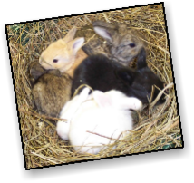
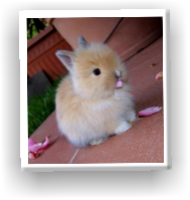

Rabbits come in many colors. For example, they are black, brown, tan, white, or grey. All rabbits are unique, like people. In this picture, you see different color rabbits. Even the nest color can be a rabbit color. Rabbits with artificial fur colors can have spots or stripes. Some dogs are white and have black spots on them. Rabbits can have that too!

Rabbits can be soft or rough. Mostly soft. Some are fuzzy. Like this one. Every rabbit has a texture (of course). Also, rabbits can be soft too. Sometimes, if you try to pet their fur they can bite. Ouch!

Colors
Textures